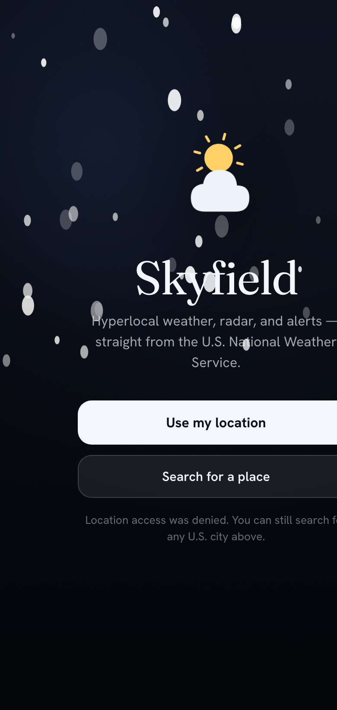

Hyperlocal, not nearby
NWS gridpoint forecasts for your exact coordinates, with current conditions pulled from the nearest reporting station.
← The Collection · No. 01
Hyperlocal weather, radar, and alerts — straight from the U.S. National Weather Service.
A forecast for your exact spot, not the nearest city. Animated radar with live storm polygons, severe-weather alerts you can actually read, and a sky that quietly shifts with the real conditions outside your window.

Most apps shrug and show you “40% chance.” Skyfield reads the live radar sweeping over your exact location, works out how the storm cells around you are actually moving, and projects that motion forward — so you get a straight answer:
“Light rain reaching you in ~10 min” · “Clearing in ~20 min”
Minute-by-minute precipitation, extrapolated from real radar at your point — not a generic hourly model. It catches the pop-up shower the forecast misses.
NWS gridpoint forecasts for your exact coordinates, with current conditions pulled from the nearest reporting station.
~2 hours of animated precipitation over a dark basemap, with active alert polygons drawn right on the map.
Live severe-weather banners, color-coded by severity, with timing and preparedness actions you can read at a glance.
The background — glow, stars, precipitation veils — responds to the real conditions and time of day around you.
GPS plus unlimited saved locations, with your choice of units for temperature, wind, pressure, and distance.
A fast, offline-capable PWA today — with a native build (widgets, background alerts) on the way.
Weather data from the U.S. National Weather Service. Skyfield is an independent app and is not affiliated with or endorsed by NOAA or the NWS.